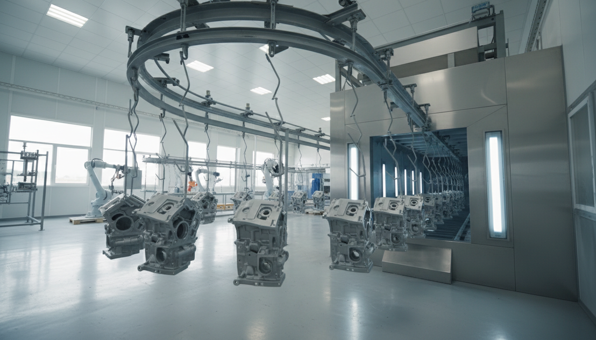
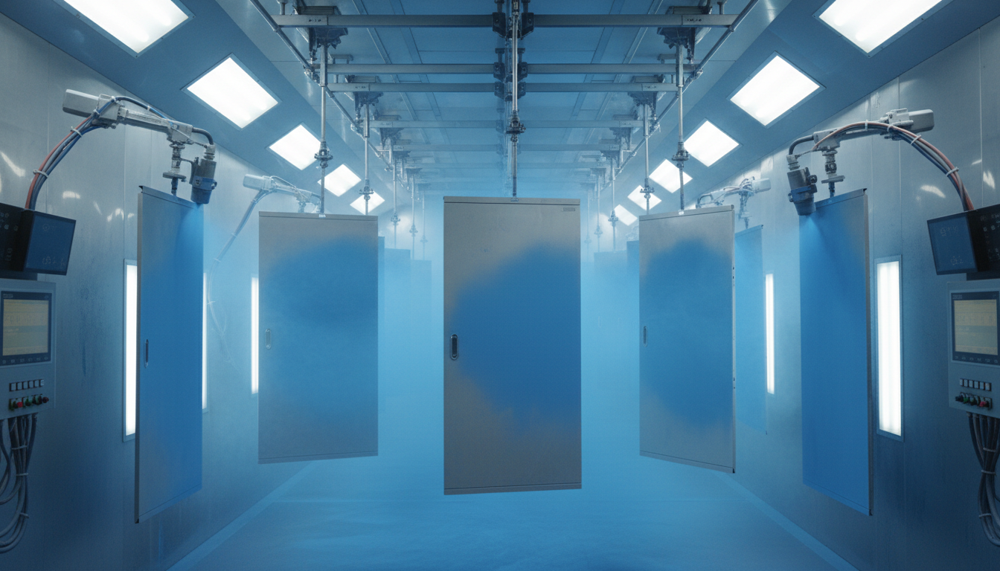
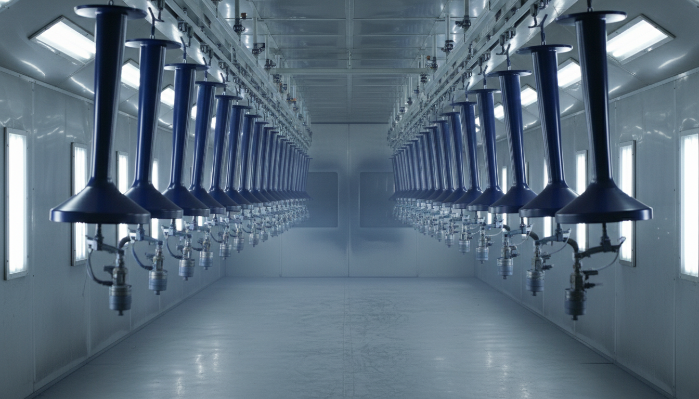

Endüstriyel ürünleriniz için uçtan uca elektrostatik toz boya, statik boya ve fason boyama çözümleri.
Metal yüzeyli endüstriyel parçalarınız için yüksek dayanımlı elektrostatik toz boya uygulaması. Statik boya olarak da bilinen bu yöntemde, boya partikülleri elektriksel şarj ile yüzeye eşit dağılır; fırınlama sonrası çok daha dayanıklı ve estetik bir kaplama oluşturur. Geleneksel yaş boyaya kıyasla 3-5 kat daha uzun ömürlüdür.

İstediğiniz RAL kodunu söyleyin, biz uygulayalım. Kurumsal renkleriniz, marka kimliğiniz ya da projeye özel renk talepleriniz için RAL kartelasının tamamında uygulama imkânı sunuyoruz.

Kaliteli boya, kaliteli yüzey hazırlık ile başlar. Boyamadan önce uyguladığımız kumlama ve fosfat işlemleri ile yüzey pürüzleri, oksit ve yağ tabakası giderilir; boyanın yüzeye tutunması maksimize edilir.

Ürün ve adet bilgisini iletin, en uygun teklif sizinle olsun.
WhatsApp ile Teklif Al